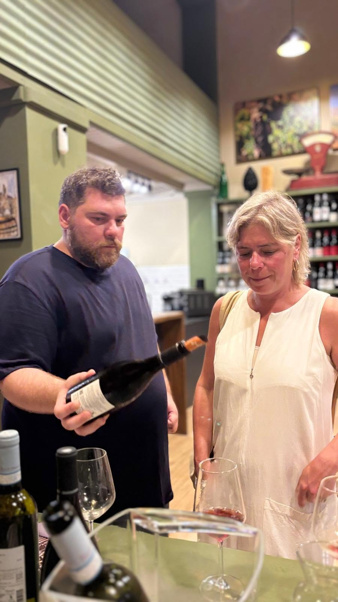
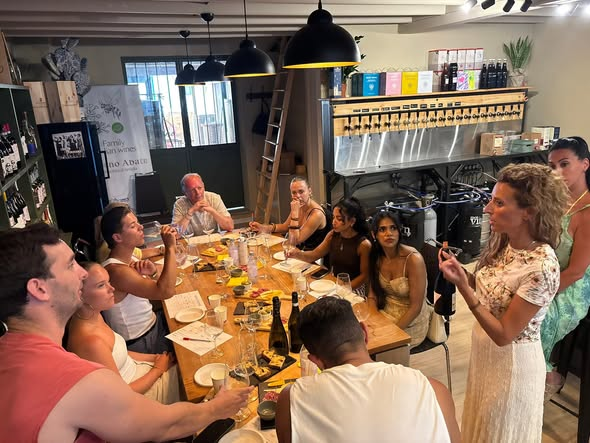

An Evening Dedicated to the Authentic Flavours of Sicily

An evening dedicated to the authentic flavours of Sicily — and one of the most enjoyable we have hosted.
We were proud to host a tasting at Divino Urban Cellar together with Duca di Salaparuta, who took us on a journey through three extraordinary labels: Lavico, Sentiero del Vento and Passo delle Mule.

A heartfelt thank you also to Olio Barbera, who made the evening even more special by offering a tasting of the prestigious Olio Lorenzo — an excellence that tells the story of the quality and tradition of Sicilian olive culture.

This is just one of many events we are organising this year. The goal is simple but ambitious: to make the Sicilian territory known through its culinary and gastronomic excellence — giving the many tourists visiting Cefalù, but also the people who live here, a way to discover this land through wines, oils and products that carry stories, people and places with them.
We believe that every glass and every taste is a journey into Sicilian culture.
A special thank you to Santi Sansone for his presence, his professionalism, and the constant support he gives us in making the most of the viticultural heritage of our island.
See you at the next event — because Sicily still has plenty of stories left to tell.
Join the next one
We run tastings and producer evenings through the year at Via Gibilmanna 16. Ask us what is coming up next.
See the calendar